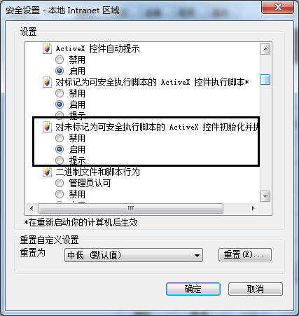
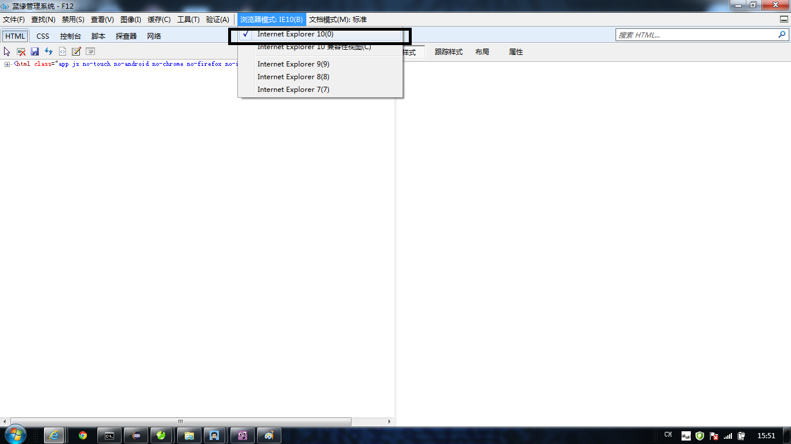

1、本系统第一次使用账户密码是123456，用户由管理员创建，如需得到用户请联系管理员。
2、系统只针对于IE6.0以上版本浏览器支持，如果在其他浏览器出现问题概不负责。
3、IE设置：
点击设置按钮,选择Internet选项
出现的对话框选择自定义设置：

把此项（标黑）设置为启动

4、IE浏览器兼容性视图设置为 “internet Explore 10(0)”

4、倘若服务器所在的路由器被断电或者重启，再次访问本站点的时候需要等候大约10分钟。
5、联系开发人员：
QQ:1156721874
QQ:825905961